This chapter links to the course’s interactive demos and uses MathJax for its
formulas. Read it through the course website (or download the file and open it in a
browser); a Canvas inline preview will reach neither the demos nor the math.
All chapters.
Polygonal Meshes: Building, Shading, and Simplifying Surfaces
CSS 551 · Advanced 3D Computer Graphics · course text
Course text · what a triangle mesh is as data, how to build one from a formula, where its normals come from, how a profile sweeps into a surface, and how a mesh is simplified into levels of detail. Assigned by your offering’s course site; pairs with the polygonal modeling lecture and the mesh-grid, lod, and simplify-compare demos.
Every real-time surface is a triangle mesh: a list of vertex positions and a list of index triples, nothing more. This chapter builds one from scratch, the \(2\times2\) grid the mesh-grid demo constructs, and works every number on it: the row-major index formula, the counts \((n+1)^2\), \(2n^2\) and \(6n^2\), the face normal of one triangle as a cross product, the averaged normal at a shared vertex, and what happens to all of them when the center vertex is lifted. It then turns to what the index array says about the surface as a whole: the half-edge structure that makes adjacency queries constant-time, Euler’s formula and manifoldness checked on the bunny, and the valence histogram. It shows the same surface shaded three ways, sweeps a profile curve into a surface of revolution, extracts a mesh from a scalar field with marching cubes, and closes with the reverse problem: taking triangles away. An edge collapse is worked with the quadric error metric on the lifted grid, and the Stanford bunny’s measured level-of-detail ladder gives the distance rule that decides which version to draw.
Definition (indexed triangle mesh)
A mesh is a vertex array \(\mathbf{v}_0, \ldots, \mathbf{v}_{V-1}\) of positions (later also
normals, texture coordinates, colors, one of each per vertex) and an index array
\(t_0, t_1, t_2, \; t_3, t_4, t_5, \ldots\) of integers whose consecutive triples name triangles by
pointing into the vertex array. Its length is \(3T\) for \(T\) triangles. The order inside a triple
is the triangle’s winding: listed counter-clockwise as seen from one side, that side
is the front face.
Two facts of geometry make the triangle the hardware primitive. Three points always lie in one
plane, so a triangle is flat and has one unambiguous normal; a quadrilateral’s four corners need
not be coplanar, and a bent quad has no single normal and no single interior. A triangle is also
always convex, so filling it is the fixed edge-function loop of
the rasterization chapter, the same loop for every
triangle ever drawn. Anything else is cut into triangles first.
The indirection is what makes the representation efficient. In a grid every interior vertex belongs
to six triangles. Stored once and referenced six times, its position, its normal and its texture
coordinate live in one place; move it and all six triangles follow. Without indices the same vertex
would be copied six times and a modeling tool would have to find and edit every copy. The GPU
receives the two arrays as they are: a vertex buffer and an index buffer.
Winding is not cosmetic. The renderer usually skips back faces (a closed solid never shows its
inside), so a triangle listed in the wrong order disappears; and, as Section 5 shows, the sign of the
computed normal is the winding, so a wrong order also lights the surface from inside.
2 · Building a grid from a formula
The mesh-grid demo builds an \(n\times n\) grid of quads on the \(xz\) plane, spanning
\([-1.5, 1.5]\) on both axes, and splits each quad into two triangles. With \(n\) quads per side there
are \(n+1\) lattice points per side, numbered row by row (row along \(z\), column along \(x\)):
\[
\mathrm{index}(\mathrm{row}, \mathrm{col}) = \mathrm{row}\cdot(n+1) + \mathrm{col}, \qquad
\mathbf{v}_{\mathrm{index}} = \bigl(-1.5 + \mathrm{col}\cdot\tfrac{3}{n},\; 0,\; -1.5 + \mathrm{row}\cdot\tfrac{3}{n}\bigr).
\]
The quad at \((\mathrm{row}, \mathrm{col})\), for \(0 \le \mathrm{row}, \mathrm{col} < n\), has corners
\(v_{00} = \mathrm{index}(\mathrm{row}, \mathrm{col})\), \(v_{10} = \mathrm{index}(\mathrm{row}+1, \mathrm{col})\),
\(v_{01} = \mathrm{index}(\mathrm{row}, \mathrm{col}+1)\), \(v_{11} = \mathrm{index}(\mathrm{row}+1, \mathrm{col}+1)\),
and is cut along the \(v_{10}\)–\(v_{01}\) diagonal:
\[
\text{tri}_0 = (v_{00}, v_{10}, v_{01}), \qquad \text{tri}_1 = (v_{01}, v_{10}, v_{11}),
\]
both counter-clockwise seen from \(+y\), so both front faces point up.
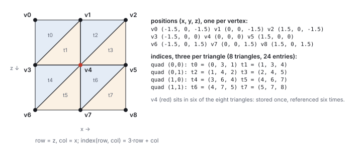
The demo’s grid at \(n = 2\), seen from above, and its two arrays. The index array is exactly what the demo’s topology builder emits; the row-major formula and the two-triangle split generate every entry.
Worked example (the 2×2 grid)
At \(n = 2\) the step is \(3/2 = 1.5\), so the nine positions are
\(\mathbf{v}_0 = (-1.5, 0, -1.5)\), \(\mathbf{v}_1 = (0, 0, -1.5)\), \(\mathbf{v}_2 = (1.5, 0, -1.5)\),
\(\mathbf{v}_3 = (-1.5, 0, 0)\), \(\mathbf{v}_4 = (0, 0, 0)\), \(\mathbf{v}_5 = (1.5, 0, 0)\),
\(\mathbf{v}_6 = (-1.5, 0, 1.5)\), \(\mathbf{v}_7 = (0, 0, 1.5)\), \(\mathbf{v}_8 = (1.5, 0, 1.5)\).
Check the formula at three corners: \(\mathrm{index}(0,0) = 0\), \(\mathrm{index}(1,1) = 3 + 1 = 4\),
\(\mathrm{index}(2,2) = 6 + 2 = 8\). Quad \((0,0)\) has corners \(v_{00} = 0, v_{10} = 3, v_{01} = 1, v_{11} = 4\),
so its two triangles are \((0, 3, 1)\) and \((1, 3, 4)\). The other three quads follow the same rule:
\((1,4,2), (2,4,5)\); \((3,6,4), (4,6,7)\); \((4,7,5), (5,7,8)\). Eight triangles, 24 index entries, and
the center vertex 4 appears in six of the triples.
The construction reads off the three counts for any \(n\): \((n+1)^2\) vertices (fence posts, one more
than the gaps), \(2n^2\) triangles (two per quad), \(6n^2\) index entries. At \(n = 2\): 9, 8, 24. At
\(n = 10\): 121, 200, 600. At \(n = 100\): 10,201 vertices and 20,000 triangles. Vertices grow like
triangles, half as fast in the limit: every vertex of a large grid is shared by six triangles, and every
triangle has three corners, so \(T \approx 2V\), which holds for any large closed triangle mesh, not only
grids.
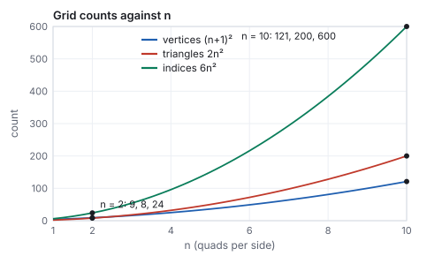
The counts as functions of \(n\). The demo prints all three live as the slider moves.
See it liveA mesh you build:
the grid of this section built as plain position and index arrays and handed to the GPU, with
\(n\) from 2 to 10, the three counts, the first two index triples, and a lift slider that moves the
center vertex and recomputes the normals of Section 5.
The other diagonal
A quad can be cut along either diagonal. The classroom reference code fans each quad from
\(v_{00}\), giving \((0, 3, 4)\) and \((0, 4, 1)\) for the first quad: the same nine vertices and eight
triangles, a different split. Both are valid meshes; they differ only in which diagonal edge the
surface bends along when a vertex is lifted. Read a mesh’s index array before assuming its split.
3 · Adjacency: the half-edge structure
Two flat arrays answer one question quickly, which triangle has which corners, and no other.
Every operation of Sections 5 to 11 asks the others: which triangles touch this vertex, which
triangle is across this edge, which vertices ring this one. Searching the index array for each
answer costs \(O(T)\) per query. A mesh that is edited, smoothed or simplified needs the answers
in \(O(1)\), and the standard way to store them is the half-edge structure.
Definition (half-edge)
Every edge is split into two half-edges, one per adjacent face, each directed the way its
face winds. A half-edge record holds: the vertex it points to, the face it belongs to, the
next half-edge around that face, and its twin, the half-edge of the same edge in
the neighboring face (none on a boundary). Each vertex stores one outgoing half-edge and each
face one of its half-edges. A triangle mesh has exactly \(3T\) half-edges.
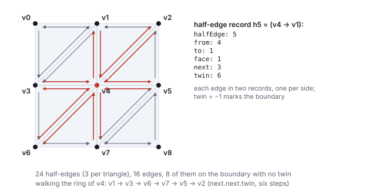
The grid’s 24 half-edges. The record for the half-edge leaving \(\mathbf{v}_4\) toward \(\mathbf{v}_1\) is written out; its twin is the half-edge of the same edge in the neighboring triangle.
Worked example (the grid’s half-edges, and one ring walk)
The \(2\times2\) grid has \(V = 9\), \(F = 8\) and \(E = 16\) edges, of which 8 lie on the boundary
and 8 are interior. Its \(3F = 24\) half-edges pair into the 8 interior edges (two records each) and
the 8 boundary edges (one record each, twin \(= -1\)). Take \(h_5\), the half-edge from
\(\mathbf{v}_4\) to \(\mathbf{v}_1\) in triangle \(t_1 = (1, 3, 4)\): its next is \(h_3\), from
\(\mathbf{v}_1\) to \(\mathbf{v}_3\); its twin is \(h_6\), from \(\mathbf{v}_1\) to \(\mathbf{v}_4\) in
\(t_2\). To list the vertices around \(\mathbf{v}_4\), start at any outgoing half-edge and repeat
next.next.twin: each step crosses to the next triangle in the fan. From \(h_5\) the walk
visits \(\mathbf{v}_1, \mathbf{v}_3, \mathbf{v}_6, \mathbf{v}_7, \mathbf{v}_5, \mathbf{v}_2\) and returns
to \(h_5\) after six steps, the six triangles that Section 2 counted by scanning all 24 indices.
At a boundary vertex the walk hits a twin of \(-1\) and must restart in the other direction; the
valence of every vertex, read off the same walk, is \((2, 4, 3, 4, 6, 4, 3, 4, 2)\) for
\(\mathbf{v}_0\) to \(\mathbf{v}_8\).
Building the structure from the two arrays is one pass over the triangles, hashing each directed
edge \((a, b)\) to find its twin \((b, a)\): \(O(T)\) time and about 4 integers per half-edge, so
roughly 12 integers per triangle on top of the 3 in the index array. The structure fails on
exactly the meshes Section 4 calls non-manifold: an edge with three faces has no single twin.
Alternatives store less (a vertex-to-triangle list, enough for normals and one-rings) or more (the
winged-edge and quad-edge structures); the half-edge is the one in the libraries (OpenMesh, CGAL,
Blender’s BMesh) because every query of this chapter is a constant number of pointer follows.
Hands-on
Run these from the course root (css551/); each prints what the text quotes.
The face normal of \(\text{tri}_0\) and the unit normal of the lifted \(\text{tri}_1\), from the library’s own cross product:
node -e "import('./lib/core/xform.js').then(x=>{console.log(JSON.stringify(x.cross([0,0,1.5],[1.5,0,0])),
JSON.stringify(x.normalize(x.cross([-1.5,0,1.5],[0,0.4,1.5]))))})"
[0,2.25,0] [-0.2495,0.9357,-0.2495] (printed to 16 digits)
Count the bunny’s edges by hashing every directed edge, the first pass of a half-edge build, on the 868-triangle level:
node --input-type=module -e "
import { readFileSync } from 'node:fs'; import { parseMeshBin } from './lib/core/models.js';
const b = readFileSync('lib/assets/models/bunny.l0.mesh.bin');
const m = parseMeshBin(b.buffer.slice(b.byteOffset, b.byteOffset + b.byteLength));
const cnt = new Map();
for (let t = 0; t < m.indices.length; t += 3) for (let k = 0; k < 3; k++) {
const a = m.indices[t + k], c = m.indices[t + (k + 1) % 3];
const key = a < c ? a + '-' + c : c + '-' + a; cnt.set(key, (cnt.get(key) || 0) + 1); }
console.log('V', m.positions.length / 3, 'E', cnt.size, 'F', m.indices.length / 3,
'chi', m.positions.length / 3 - cnt.size + m.indices.length / 3,
'boundary', [...cnt.values()].filter((c) => c === 1).length);"
V 454 E 1325 F 868 chi -3 boundary 46
Change l0 to l3 for the full mesh (35,947 declared vertices, of which 1,113 are referenced by no triangle; Section 4 explains the count).
In the mesh-grid demo, set \(n = 2\), turn on the normals overlay and drag the lift to 0.4: the six arrows around the center tilt inward and the center arrow stays vertical, the numbers of Section 5.
4 · Topology: Euler’s formula, manifolds, valence
The index array also fixes what kind of surface the mesh is, independently of where the vertices
sit. Three facts about it can be checked in one pass and catch most broken meshes.
Euler’s formula
For a connected mesh, \(V - E + F = \chi = 2 - 2g - b\), where \(g\) is the genus (the number of
handles) and \(b\) the number of boundary loops. A closed sphere-like mesh has \(\chi = 2\); a disk
has \(\chi = 1\); a torus \(\chi = 0\). For a closed triangle mesh \(3F = 2E\), so \(E = 3F/2\) and
\(F = 2V - 4 + 4g\): about twice as many triangles as vertices, and six edges per vertex on average.
Worked example (four meshes)
mesh
\(V\)
\(E\)
\(F\)
\(\chi\)
boundary edges, loops
reading
cube
8
12
6
2
0, 0
closed, genus 0
the \(2\times2\) grid
9
16
8
1
8, 1
a disk: \(2 - 0 - 1\)
icosphere, 320 faces
162
480
320
2
0, 0
closed, genus 0; \(E = 3F/2\)
bunny, full
34,834
104,288
69,451
\(-3\)
223, 5
\(2 - 2g - 5 = -3\): genus 0 with five holes
bunny, L0
454
1,325
868
\(-3\)
46, 5
the same topology after simplification
The bunny file declares 35,947 vertices, but 1,113 of them appear in no triangle (scan leftovers
that the simplifier kept in the array); Euler’s formula counts only the 34,834 that are used.
Its five boundary loops (of 80, 42, 40, 39 and 22 edges) are the holes in the scan’s base and
eyes, and the L0 version keeps exactly five: the quadric collapse of Section 10 never closes or
opens a hole, which is a property to check after any simplifier runs.
Definition (manifold, orientable)
A mesh is two-manifold if every edge belongs to one or two faces and the faces around
every vertex form a single fan (one disk, or one half-disk at a boundary). An edge with three faces
(a fin), two fans sharing one vertex (a bow tie), and a face that touches another only at a vertex
all break it. A manifold mesh is orientable if the windings can be chosen so that every
interior edge is traversed in opposite directions by its two faces; the Möbius strip cannot be.
Every algorithm of this chapter assumes both, and the half-edge structure cannot even represent
the exceptions.
Two consequences matter in practice. Consistent orientation is checked by the twin rule: an
interior edge whose two half-edges run the same direction means one of the two faces has its
winding reversed, and its normal points the wrong way. And on a closed manifold every vertex’s
faces sum, by the divergence theorem, to zero total vector area; a nonzero sum is a hole.
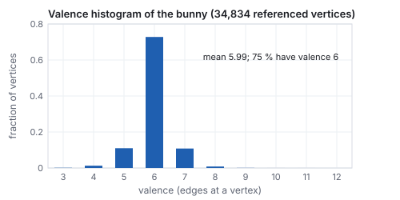
Valence of the bunny’s 34,834 referenced vertices. Three quarters have valence 6, the value Euler’s formula forces on average for a closed mesh; the 5s and 7s are where the scan’s triangulation turns.
Valence, the number of edges at a vertex, is the local face of Euler’s formula: on a
closed triangle mesh it averages \(6 - 12/V\), so nearly 6, and the bunny’s mean is 5.99 with
75 % of vertices at exactly 6. Vertices far from 6 are where subdivision (see
the curves chapter) loses smoothness and where
simplifiers produce slivers; a remesher’s job is largely to push the histogram toward that
one bar. The triangle-quality measures of Section 11 (aspect ratio, the smallest angle) are the
other half of mesh quality; valence is the combinatorial half.
5 · Face normals and vertex normals
Positions fix a surface’s shape and say nothing about which way it faces. Lighting (see the
illumination chapter) needs the facing direction at every point, the unit normal, so every vertex
carries one next to its position. For a mesh built by hand, the normals are computed from the
positions, and the tool is the cross product of the vectors chapter.
Definition (face normal, vertex normal)
For a triangle \((\mathbf{a}, \mathbf{b}, \mathbf{c})\), the face normal is
\[
\mathbf{f} = (\mathbf{b} - \mathbf{a}) \times (\mathbf{c} - \mathbf{a}),
\]
perpendicular to the triangle, pointing out of the front face for a counter-clockwise triple, with
length \(|\mathbf{f}|\) equal to twice the triangle’s area. The vertex normal at vertex \(i\) is the
normalized sum of the face normals of every triangle that touches \(i\):
\[
\mathbf{n}_i = \frac{\sum_{\text{faces } f \ni i} \mathbf{f}}{\bigl|\sum_{f \ni i} \mathbf{f}\bigr|}.
\]
Summing the unnormalized \(\mathbf{f}\) weights each face by its area; summing unit face normals
weights them equally. Both are used; the demo and this chapter use area weighting.
Worked example (the flat grid)
\(\text{tri}_0 = (0, 3, 1)\) with \(\mathbf{v}_0 = (-1.5, 0, -1.5)\), \(\mathbf{v}_3 = (-1.5, 0, 0)\),
\(\mathbf{v}_1 = (0, 0, -1.5)\). The two edges from \(\mathbf{v}_0\) are
\(\mathbf{v}_3 - \mathbf{v}_0 = (0, 0, 1.5)\) and \(\mathbf{v}_1 - \mathbf{v}_0 = (1.5, 0, 0)\), and
\[
(0, 0, 1.5)\times(1.5, 0, 0) = (0\cdot0 - 1.5\cdot0,\; 1.5\cdot1.5 - 0\cdot0,\; 0\cdot0 - 0\cdot1.5) = (0, 2.25, 0).
\]
Straight up, as a floor’s normal should be, and its length 2.25 is twice the area of a right
triangle with legs 1.5 (area 1.125). Normalized: \((0, 1, 0)\). Every face of the flat grid gives the same
vector, so every vertex normal is \((0, 1, 0)\) too.
Worked example (the lifted grid)
Lift the center vertex to \(\mathbf{v}_4 = (0, 0.4, 0)\), the demo’s default. The six faces around it
tilt. Take \(\text{tri}_1 = (1, 3, 4)\): \(\mathbf{v}_1 = (0, 0, -1.5)\), \(\mathbf{v}_3 = (-1.5, 0, 0)\),
\(\mathbf{v}_4 = (0, 0.4, 0)\); edges \(\mathbf{v}_3 - \mathbf{v}_1 = (-1.5, 0, 1.5)\) and
\(\mathbf{v}_4 - \mathbf{v}_1 = (0, 0.4, 1.5)\);
\[
(-1.5, 0, 1.5)\times(0, 0.4, 1.5) = (0\cdot1.5 - 1.5\cdot0.4,\; 1.5\cdot0 - (-1.5)\cdot1.5,\; (-1.5)\cdot0.4 - 0\cdot0) = (-0.6, 2.25, -0.6),
\]
length \(\sqrt{0.36 + 5.0625 + 0.36} = 2.405\), unit normal \((-0.250, 0.936, -0.250)\): the face leans
away from the peak, toward its own outer corner. The four faces adjacent to the outer edges tilt by
\((\pm0.258, 0.966, 0)\) or \((0, 0.966, \pm0.258)\), and the two opposite corner faces by
\((\pm0.250, 0.936, \pm0.250)\); the two corner faces \(t_0\) and \(t_7\) do not touch \(\mathbf{v}_4\) and stay flat.
Worked example (two vertex normals)
Vertex 1 sits on faces \(t_0, t_1, t_2\), with face normals \((0, 2.25, 0)\), \((-0.6, 2.25, -0.6)\) and
\((0, 2.25, -0.6)\). Their sum is \((-0.6, 6.75, -1.2)\), length 6.88, so
\(\mathbf{n}_1 = (-0.087, 0.981, -0.174)\): tilted \(11.2^\circ\) from vertical, toward the peak, the
direction a smooth tent surface would face there. Vertex 4 sits on all six tilted faces; their
horizontal components cancel in pairs and the sum is \((0, 13.5, 0)\), so \(\mathbf{n}_4 = (0, 1, 0)\).
The highest point of a symmetric tent faces straight up. The corners 0 and 8 each touch one flat
face and keep \((0, 1, 0)\).
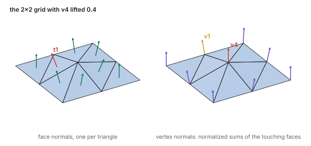
Face normals (left) and vertex normals (right) of the lifted grid, computed by the demo’s own accumulation code. The face normals lean away from the peak; the averaged vertex normals lean toward it, and the peak itself is vertical.
Two implementation notes. The accumulation runs once over the triangles, adding each face normal into
its three vertices, then once over the vertices to normalize, so it costs \(O(T + V)\). And the
normalize step needs a guard: a vertex whose incident faces have zero total area (a degenerate
triangle, or the pole of Section 8) has a zero sum, and normalizing it produces NaN, which propagates
through the lighting as black or garbage pixels. The demo returns \((0, 1, 0)\) when the sum’s
length is below \(10^{-8}\).
Hard edges and split normals
Averaging assumes the surface is smooth across every edge. A cube averaged this way gets one
normal per corner, the diagonal \((1, 1, 1)/\sqrt3\), and shades as a rounded blob with its edges
washed out. The fix is to decide, per edge, whether it is smooth or hard: an edge whose two face
normals differ by more than a threshold angle (Maya’s and Blender’s default is
\(30^\circ\)) keeps separate normals on each side. Since a vertex holds one normal, a hard edge
requires the vertex to be split: duplicated in the array, once per smooth group, with
the same position and different normals. A cube shaded correctly has 24 vertices, not 8; the flat
sphere of Section 6 is the extreme case with \(3T\) vertices and every edge hard. The same split is
forced by texture seams, where one position needs two coordinates. The half-edge structure of
Section 3 is built on the unsplit mesh, and the split copy is what goes to the GPU.
6 · Flat, Gouraud, and Phong shading
The averaging of Section 5 is also a choice of look. The same 80-triangle sphere is shown below
three times, with identical positions and identical light; only what is interpolated across each
triangle differs. The lighting formula is the Phong model of the illumination chapter; here it is a
black box that turns a normal into a color.
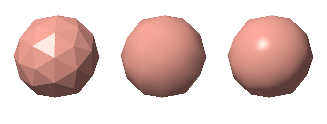
One icosphere (42 vertices, 80 triangles), rendered by this chapter’s own rasterizer. Left, flat: one color per face from the face normal. Middle, Gouraud: the lighting is evaluated at the three vertices from their averaged normals and the colors are interpolated. Right, Phong: the normals are interpolated and renormalized, and the lighting is evaluated per pixel. The specular highlight falls between vertices, so Gouraud misses it.
Flat shading gives every pixel of a triangle the color computed from the face normal.
It needs the face normal per triangle, which means vertices cannot be shared (a shared vertex can
hold only one normal), so a flat-shaded mesh stores \(3T\) vertices. It is the deliberate low-poly look.
Gouraud shading (Henri Gouraud, 1971) evaluates the lighting at each vertex with the
averaged vertex normal and lets the rasterizer interpolate the resulting colors with the barycentric
weights of the rasterization chapter. Three lighting
evaluations per triangle instead of one per pixel. Its failure is visible in the middle panel: a
highlight narrower than a triangle is lost if it falls between vertices, and it flickers as the object
rotates and the highlight crosses vertices.
Phong shading (Bui Tuong Phong, 1975) interpolates the normals instead, renormalizes
the interpolated vector at each pixel (a blend of unit vectors is shorter than one), and evaluates
the lighting per pixel. It is what every fragment shader does today; the cost that made it expensive
in 1975 is now one dot product per pixel among many.
The word Phong names two different things: the interpolation scheme here and the reflection model in
the illumination chapter. Both are from the same 1975 paper.
7 · Editing: move a vertex, recompute
A polygon modeling tool is the demo’s lift slider generalized: grab any vertex, move it, and
rebuild what depends on it. Positions and normals are coupled. Moving one vertex changes the plane of
every triangle that touches it, and therefore the face normals of those triangles and the averaged
normals of every vertex on them, the one-ring neighborhood. A tool that moves a vertex and leaves the
normals alone lights the surface as if it were still flat; the tent in the demo would render as a
uniformly lit plane with a bump you could see only on the silhouette.
The update loop of a small editor reads every handle position into the vertex array, recomputes all
normals, and hands both arrays back to the geometry each frame. For a mesh of a few hundred vertices
that is cheap; a production editor recomputes only the one-ring of the moved vertex, which is why
mesh data structures with adjacency (which triangles touch this vertex, which triangles share this
edge) exist. The two flat arrays of Section 1 answer neither question without a search.
Deformations that move many vertices at once follow the same rule with a formula in place of a hand:
a displacement field, a lattice, a skeleton (see the animation chapter). Every one of
them ends in the same recompute-the-normals step.
Smoothing: the Laplacian
Definition (umbrella operator, Laplacian smoothing)
The discrete Laplacian at a vertex is the vector from it to the mean of its one-ring,
\(\Delta\mathbf{v}_i = \frac{1}{|N_i|}\sum_{j \in N_i} \mathbf{v}_j - \mathbf{v}_i\). One smoothing step
moves every vertex a fraction \(\lambda\) of the way: \(\mathbf{v}_i \leftarrow \mathbf{v}_i + \lambda\,\Delta\mathbf{v}_i\),
all vertices updated from the old positions at once. It is a diffusion of position across the
mesh; noise (high frequency) disappears in a few steps, shape (low frequency) more slowly.
Worked example (one step on the lifted grid)
The one-ring of \(\mathbf{v}_4\) is \(\{1, 2, 3, 5, 6, 7\}\), all at height 0, with mean \((0, 0, 0)\),
so \(\Delta\mathbf{v}_4 = (0, -0.4, 0)\). With \(\lambda = \tfrac12\) the peak drops to
\((0, 0.2, 0)\); with \(\lambda = 1\) it lands on the mean and the tent is gone in one step. But
every vertex moves. \(\mathbf{v}_1\), whose ring is \(\{0, 2, 3, 4\}\), goes to
\((-0.188, 0.05, -1.125)\): it rises a little (it sees the peak) and slides inward toward the
grid’s center. The corner \(\mathbf{v}_0\), with ring \(\{1, 3\}\), goes to \((-1.125, 0, -1.125)\),
a quarter of the way to the middle. Boundaries must be pinned or they contract.
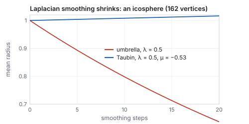
Twenty steps of Laplacian smoothing on an icosphere. The umbrella operator shrinks the sphere by a third; Taubin’s alternating positive and negative steps hold its size.
Pitfall
Laplacian smoothing shrinks everything, not only noise. A 162-vertex icosphere with
\(\lambda = 0.5\) has mean radius 0.978 after one step, 0.893 after five, and 0.637 after twenty:
a third of the model gone with no noise removed after the first few steps. The reason is that a
convex vertex always lies outside the mean of its neighbors, so every step pulls it in. Taubin’s
method (1995) alternates a smoothing step \(\lambda = 0.5\) with an inflating step
\(\mu = -0.53\); after twenty pairs the radius is 1.016, and the high-frequency noise is still
removed because the two steps cancel only at low frequency. The other standard cure is to weight
the ring by cotangents of the opposite angles rather than uniformly, which makes the operator
approximate the true surface Laplacian and stops tangential drift.
8 · Sweeping a profile
Placing vertices one by one does not scale. A surface of revolution generates a whole mesh
from a short curve: a profile of \(P\) points \(\mathbf{p}_i = (r_i, y_i)\) in a half-plane, spun about the
\(y\) axis in \(S\) equal steps. The vertex at (profile point \(i\), step \(j\)) is
\[
\mathbf{v}(i, j) = R_y\!\left(\tfrac{2\pi j}{S}\right) (r_i, y_i, 0)^{\!\top} = \bigl(r_i \sin\theta_j,\; y_i,\; r_i \cos\theta_j\bigr), \qquad \theta_j = \tfrac{2\pi j}{S},
\]
with \(R_y\) the rotation matrix of the rotation chapter. The
\(P\times S\) vertices form a grid exactly like Section 2’s, indexed \(i\cdot S + j\), with one change:
the column index wraps, \(j + 1\) taken modulo \(S\), so the last step connects back to the first and the
surface closes. The quad split and the normal computation are unchanged.
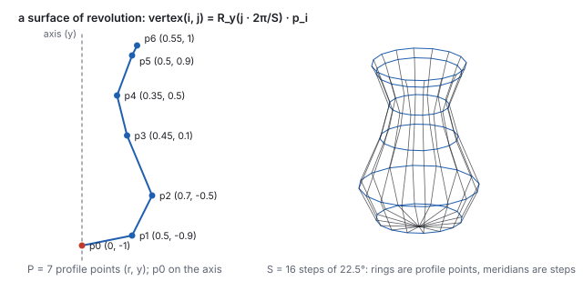
A profile of \(P = 7\) points swept in \(S = 16\) steps. The bottom point lies on the axis, so its ring collapses to a single point, the pole.
Worked example (one swept vertex, and the counts)
Profile point \(\mathbf{p}_2 = (0.7, -0.5)\) at step \(j = 3\): \(\theta_3 = 3\cdot 22.5^\circ = 67.5^\circ\),
\(\sin 67.5^\circ = 0.924\), \(\cos 67.5^\circ = 0.383\), so
\(\mathbf{v}(2, 3) = (0.7\cdot0.924,\; -0.5,\; 0.7\cdot0.383) = (0.647, -0.5, 0.268)\), at distance 0.7 from
the axis as it must be. Built naively, the sweep has \(P\cdot S = 112\) vertices and
\(2(P-1)S = 192\) triangles. But \(\mathbf{p}_0 = (0, -1)\) has radius 0, so all 16 copies of it are the same
point \((0, -1, 0)\), and the 16 quads between ring 0 and ring 1 each have two coincident corners: one of
their two triangles has zero area and a zero cross product. The correct construction stores the pole
once and caps it with a fan of \(S\) triangles: \((P-1)S + 1 = 97\) vertices and
\(2(P-2)S + S = 176\) triangles, none degenerate.
A sphere swept from a half-circle has a pole at each end and needs the fan at both; a cylinder or a vase
whose profile stays off the axis needs none, and is open there. The guard in Section 5 is what keeps a
forgotten pole from turning into NaN normals; the fan is what makes the guard unnecessary. The same
machinery with a translation in place of the rotation is an extrusion (a cross-section pushed
along a line), and with a general path and a frame carried along it is a sweep (a tube along a
curve, see the curves chapter). All three are a cross-section times a sequence of
rigid transforms, indexed as a grid.
9 · Surfaces from volumes: marching cubes
A third source of meshes is neither a formula nor a hand: a scalar field \(f(x, y, z)\) sampled on a
grid, with the surface defined implicitly as the set where \(f = 0\). Medical scans (density),
distance fields, fluid simulations, and the learned scenes of
the learned-scenes chapter all produce their geometry this
way, and the standard extractor is Lorensen and Cline’s marching cubes (1987).
Definition (marching cubes)
Visit every cell of the grid. Classify each of its 8 corners as inside (\(f > 0\)) or outside; the
8 bits form a case index from 0 to 255. Each cut edge (one corner inside, one outside) gets a vertex
by linear interpolation to the zero of \(f\) along the edge. A precomputed table maps the case to
the triangles joining those vertices, at most 5 per cell. By symmetry the 256 cases reduce to 15
distinct configurations, a few of which are ambiguous and need a tie-break to avoid holes.
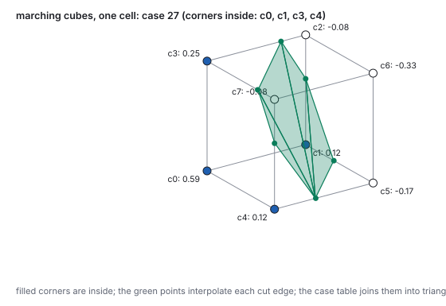
One cell of a distance field cut by a sphere. Four corners are inside; six edges cross; the crossing points, ordered around the loop, make a hexagon that the case table triangulates.
Worked example (one cell)
The field is the signed distance to a unit sphere centered at \((0.2, 0.3, 0.2)\), positive inside.
On the unit cell’s corners \(c_0 = (0,0,0)\) to \(c_7 = (0,1,1)\) (the standard order: bottom
face \(c_0 c_1 c_2 c_3\) counter-clockwise, then the top), the values are
\(0.588, 0.123, -0.082, 0.245, 0.123, -0.170, -0.330, -0.082\). Inside: \(c_0, c_1, c_3, c_4\), bits
\(1 + 2 + 8 + 16 = 27\), case 27. Six edges change sign. Edge \(c_1 c_2\): the zero is at
\(t = (0 - 0.123)/(-0.082 - 0.123) = 0.6\), the point \((1, 0.6, 0)\). Edge \(c_2 c_3\): \(t = 0.25\)
from \(c_2\), \((0.75, 1, 0)\). The six points in order around the loop are
\((0.418, 0, 1)\), \((1, 0, 0.418)\), \((1, 0.6, 0)\), \((0.75, 1, 0)\), \((0, 1, 0.75)\), \((0, 0.6, 1)\), a
hexagon which the table cuts into 4 triangles. A cell of the same field far from the sphere has
all corners the same sign, case 0 or 255, and emits nothing; on a \(64^3\) grid that is most cells,
so the output is a thin shell of triangles around the surface.
The mesh that comes out is manifold and closed wherever the field is, has vertices only on grid
edges (so its resolution is the grid’s, and it aliases fine features exactly as
a sampled image does), and needs the normal averaging of
Section 5 or, better, the field’s own gradient as the normal. Dual contouring places one vertex
inside each cell instead of one per edge and recovers sharp edges that marching cubes rounds off.
Both produce more triangles than the shape needs, which is why the simplifier of the next section
usually runs on their output.
10 · Simplification: the edge collapse and the quadric error
Scanned and sculpted meshes have far more triangles than any view needs. The Stanford bunny used in
the course demos has 69,451 triangles at full resolution; at a distance where it covers a hundred
pixels, nearly all of them are smaller than a pixel. Simplification removes triangles while keeping the
shape, and one local operation does almost all of it.
Definition (edge collapse)
Collapsing the edge \((\mathbf{a}, \mathbf{b})\) merges its two endpoints into one vertex \(\mathbf{m}\)
(at \(\mathbf{a}\), at \(\mathbf{b}\), at the midpoint, or anywhere else) and deletes the triangles that
contained the edge. On an interior edge of a closed mesh this removes one vertex, two triangles and
three edges. The inverse operation, the vertex split, restores them from the record
\((\mathbf{m}, \mathbf{a}, \mathbf{b}, \text{the two side vertices})\).
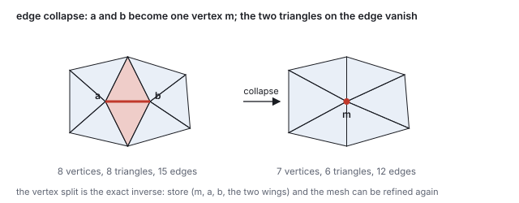
One edge collapse. The counts drop by one vertex, two triangles and three edges; every other triangle keeps its corners.
Which edge to collapse first, and where to put \(\mathbf{m}\)? Garland and Heckbert’s
quadric error metric (1997) answers both with one number. Every vertex remembers the planes of
the triangles around it. The cost of moving that vertex to a point \(\mathbf{x}\) is its summed squared
distance to those planes:
\[
Q(\mathbf{x}) = \sum_{\text{planes } (\mathbf{n}, d)} (\mathbf{n}\cdot\mathbf{x} + d)^2,
\]
with each plane stored as a unit normal \(\mathbf{n}\) and offset \(d = -\mathbf{n}\cdot\mathbf{p}\) for
any point \(\mathbf{p}\) on it (the signed-distance form of the
vectors chapter). The cost of collapsing \((\mathbf{a}, \mathbf{b})\) to \(\mathbf{m}\) is
\(Q_a(\mathbf{m}) + Q_b(\mathbf{m})\): how far \(\mathbf{m}\) strays from every plane either endpoint used to
lie on. Because \(Q\) is a quadratic in \(\mathbf{x}\), it is a \(4\times4\) symmetric matrix that adds when
vertices merge, and its minimum is a \(3\times3\) linear solve. The algorithm puts every edge in a priority
queue keyed by its minimal cost and collapses the cheapest edge until the target triangle count is reached.
Worked example (two edges of the lifted grid)
On the lifted grid of Section 5, consider collapsing the edge \((\mathbf{v}_4, \mathbf{v}_1)\). The planes of
\(\mathbf{v}_4\) are its six tilted faces, for example \(t_1\) with \(\mathbf{n} = (-0.250, 0.936, -0.250)\) and
\(d = -\mathbf{n}\cdot\mathbf{v}_4 = -0.936\cdot0.4 = -0.374\); the planes of \(\mathbf{v}_1\) are \(t_0, t_1, t_2\),
and \(t_0\) is the floor \(y = 0\). Seven distinct planes. The cost of the collapse at three candidate
positions:
put \(\mathbf{m}\) at
\(Q(\mathbf{m})\)
why
\(\mathbf{v}_4 = (0, 0.4, 0)\)
0.160
on all six tilted planes; \(0.4^2\) from the floor plane of \(t_0\)
the midpoint \((0, 0.2, -0.75)\)
0.404
0.2 from the floor, 0.19 to 0.39 from the far tilted planes
\(\mathbf{v}_1 = (0, 0, -1.5)\)
1.457
on \(t_0, t_1, t_2\); far below the four planes on the other side of the tent
the minimum, \((0, 0.338, 0)\)
0.135
the linear solve: slightly below the peak, trading a little floor error for less tilt error
Now the edge \((\mathbf{v}_0, \mathbf{v}_1)\): \(\mathbf{v}_0\) lies on \(t_0\) only, and \(t_0\) is one of
\(\mathbf{v}_1\)’s three planes, so collapsing to \(\mathbf{v}_1\) costs \(Q = 0\) exactly. The corner vertex is
redundant: removing it changes the flat corner triangle into nothing and moves no surface. QEM collapses
this edge first, then the other flat corners, and reaches the tent’s six faces last, which is the
order a person would choose.
The quadric is a sum of squared plane distances, not a true distance to the surface, and it can be fooled
(a vertex far from a plane along the plane’s own extension still reads as far); its virtues are that it
is additive, that its minimum is closed-form, and that it costs one \(4\times4\) matrix per vertex. Whole
families of simplifiers vary the cost (edge length, curvature, texture stretch, screen-space error) and the
operation (vertex removal, vertex clustering, remeshing); the collapse with a queue is the one in the
libraries, and it is what produced the bunny levels of the next section.
11 · Levels of detail and progressive meshes
An engine keeps several simplified versions of each model, its levels of detail (James Clark,
1976), and draws the coarsest one whose error is invisible at the current distance. The course’s bunny
ladder was produced by greedy quadric collapse to four levels, and the error of each level against the
full mesh was measured as the distance from the simplified surface to the original, in units of the
model’s height:
level
triangles
mean error
max error
median triangle aspect
L0
868
\(3.2\times10^{-3}\)
\(1.5\times10^{-2}\)
0.55
L1
3,472
\(1.0\times10^{-3}\)
\(6.3\times10^{-3}\)
0.53
L2
13,889
\(2.7\times10^{-4}\)
\(1.9\times10^{-3}\)
0.55
L3 (full)
69,451
0
0
0.60
Each level has a quarter of the triangles of the next and roughly three times its error: eighty times
fewer triangles between L3 and L0 buys a maximum deviation of 1.5 % of the bunny’s height.
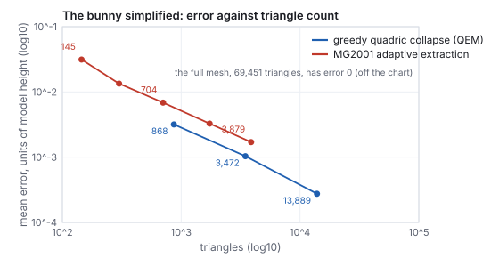
Mean error against triangle count for two simplifiers on the same bunny, measured on the course’s baked assets. QEM chases minimum surface deviation; the MG2001 extraction (after Gavriliu, Carranza, Breen and Barr, 2001) chases well-shaped triangles, and its median aspect ratio is 0.70 against QEM’s 0.55 at the same budget. The same triangle count does not buy the same mesh.
Worked example (the distance rule)
With a vertical field of view of \(45^\circ\) and 720 rows, one pixel at distance \(d\) (in model heights)
spans \(2d\tan 22.5^\circ / 720 = 0.00115\,d\) model heights. A level is safe once its maximum error
projects to less than a pixel, \(\text{maxErr} < 0.00115\,d\):
level
max error
safe beyond \(d\)
pixels of error at \(d = 2\)
L2 (13,889)
0.0019
1.7
0.8
L1 (3,472)
0.0064
5.5
2.8
L0 (868)
0.0154
13.4
6.7
At two model heights away, L2 is already sub-pixel and the full mesh is wasted; at fourteen, the
868-triangle bunny is indistinguishable from the 69,451-triangle one. The switch is visible as a pop
when it happens at a distance where the error is still a few pixels, which is why engines fade between
levels or choose the thresholds conservatively.
Hoppe’s progressive mesh (1996) replaces the ladder with a continuum. Record every collapse
of the simplification; the coarsest mesh plus the list of vertex splits, applied in reverse order, rebuilds
every intermediate resolution exactly. The bunny’s stream stores a base of 1,368 vertices and 500
triangles followed by 34,579 split records; applying \(k\) of them gives a mesh of \(500 + 2k\) triangles
for any \(k\), so the triangle count can track the distance continuously instead of in four steps, and the
stream can be sent over a network coarse-first. The cost is that each split touches a few triangles, so
changing resolution by a large amount is a loop of many small edits rather than one buffer swap.
See it liveLevels of detail: the four
bunny levels (and five levels of an icosphere and the teapot) with the exact counts read from the active
buffers, and a distance slider to judge when the switch shows.
Three simplifiers, one budget:
QEM, the progressive-mesh stream, and the MG2001 extraction side by side at the same triangle count.
Index order and the vertex cache
The GPU runs the vertex shader once per index, unless the vertex is in a small post-transform
cache (16 to 32 entries) because a recent triangle used it. The cost of a mesh is therefore not
\(3T\) shader runs but the average cache miss ratio (ACMR), misses per triangle, which
depends only on the order of the index array. The grid at \(n = 10\) (121 vertices, 200 triangles)
in row-major order has an ACMR of 1.10 with a 16-entry FIFO cache; the same triangles in a random
order, 2.70; the lower bound, one miss per vertex, is \(121/200 = 0.605\), which a 32-entry cache
reaches on the row-major order because a whole row of vertices then fits. Reordering triangles
for locality (Forsyth’s 2006 heuristic, or the meshoptimizer library that produced the bunny
levels) is a one-time offline pass that halves the vertex-shading cost of scanned meshes, and
triangle strips were the earlier form of the same idea.
12 · Mesh files: OBJ and glTF
A mesh file stores the two arrays and, optionally, normals, texture coordinates and materials.
Two formats cover most of what a graduate course meets. Wavefront OBJ (1990) is text, one vertex
or face per line, with 1-based indices; the \(2\times2\) grid is
v -1.5 0 -1.5
v 0 0 -1.5
v 1.5 0 -1.5
v -1.5 0 0
v 0 0.4 0
v 1.5 0 0
v -1.5 0 1.5
v 0 0 1.5
v 1.5 0 1.5
f 1 4 2
f 2 4 5
f 2 5 3
f 3 5 6
f 4 7 5
f 5 7 8
f 5 8 6
f 6 8 9
Faces may have any number of sides (a quad is f 1 4 5 2), normals and coordinates
are separate lists joined by f 1/1/1 4/4/4 2/2/2 triples, and a vertex on a hard
edge or a seam is split at load time exactly as Section 5 describes, because OBJ indexes
position, normal and coordinate independently while the GPU indexes them together. The format is
readable and universal and has no binary form, no scene graph and no animation.
glTF 2.0 (Khronos, 2017) is the current interchange format for real-time work: a JSON document
describing a scene graph (the nodes and local transforms of
the scene-graphs chapter), meshes as primitives that point at typed binary buffers, PBR
materials in the metallic-roughness form of the
light-transport chapter, textures, skins and animation channels. The grid is one primitive
with two accessors: positions, 9 vectors of 3 float32 (108 bytes), and indices, 24 uint16 (48
bytes), both in one binary buffer that the GPU can upload without parsing. The JSON says how to
read them:
mode 4 is a triangle list, 5126 is float32, 5123 is uint16, and the bounding box in
the position accessor is what a loader uses to frame the model. The course’s own
.mesh.bin files are a stripped version of the same idea: a 16-byte header with the
counts, then positions, normals, coordinates and indices as raw arrays. Whatever the format, the
loader ends with the two arrays of Section 1 and hands them to the GPU.
Papers
H. Gouraud, “Continuous Shading of Curved Surfaces,” IEEE Transactions on Computers C-20(6),
1971. B. T. Phong, “Illumination for Computer Generated Pictures,” Communications of the ACM
18(6), 1975. J. H. Clark, “Hierarchical Geometric Models for Visible Surface Algorithms,”
Communications of the ACM 19(10), 1976 (levels of detail). H. Hoppe, “Progressive Meshes,”
SIGGRAPH 1996. M. Garland and P. Heckbert, “Surface Simplification Using Quadric Error
Metrics,” SIGGRAPH 1997. M. Gavriliu, J. Carranza, D. Breen and A. Barr, “Fast Extraction of
Adaptive Multiresolution Meshes with Guaranteed Properties from Volumetric Data,” IEEE Visualization 2001.
W. Lorensen and H. Cline, “Marching Cubes: A High Resolution 3D Surface Construction Algorithm,” SIGGRAPH 1987.
G. Taubin, “A Signal Processing Approach to Fair Surface Design,” SIGGRAPH 1995. M. Botsch, L. Kobbelt, M. Pauly, P. Alliez and B. Lévy, Polygon Mesh Processing, 2010 (half-edges, smoothing, remeshing).
13 · Exercises
Exercise 1 (indexing)
For the grid at \(n = 3\), give the three counts, the index of the vertex at \((\mathrm{row}, \mathrm{col}) = (2, 1)\), and the two index triples of quad \((1, 2)\).
Solution
\(16\) vertices, \(18\) triangles, \(54\) indices. \(\mathrm{index}(2,1) = 2\cdot4 + 1 = 9\). Quad \((1,2)\): \(v_{00} = 6\), \(v_{10} = 10\), \(v_{01} = 7\), \(v_{11} = 11\), so \((6, 10, 7)\) and \((7, 10, 11)\).
Exercise 2 (winding)
Reverse \(\text{tri}_0\) of the flat grid to \((0, 1, 3)\) and recompute its face normal. What happens on screen?
Solution
Edges \(\mathbf{v}_1 - \mathbf{v}_0 = (1.5, 0, 0)\) and \(\mathbf{v}_3 - \mathbf{v}_0 = (0, 0, 1.5)\); the cross product is \((0, -2.25, 0)\), pointing down. The triangle’s front face now points into the floor: with back-face culling on it vanishes when viewed from above, and without culling it is lit as if the light were below.
Exercise 3 (a vertex normal)
On the lifted grid, vertex 2 sits on faces \(t_2\) and \(t_3\). Using the face normals of Section 5, compute \(\mathbf{n}_2\).
Solution
\(t_2 = (1, 4, 2)\) has face normal \((0, 2.25, -0.6)\) and \(t_3 = (2, 4, 5)\) has \((0.6, 2.25, 0)\) (both from the tilt toward the raised center). Sum \((0.6, 4.5, -0.6)\), length \(4.579\), so \(\mathbf{n}_2 = (0.131, 0.983, -0.131)\): the corner leans toward the peak, by \(10.6^\circ\).
Exercise 4 (a sweep)
A wine glass profile has \(P = 9\) points, the first on the axis, swept in \(S = 24\) steps. How many vertices and triangles, with the pole handled correctly? Where does \(\mathbf{p}_5 = (0.3, 0.8)\) land at step 6?
Solution
\((P-1)S + 1 = 193\) vertices; \(2(P-2)S + S = 336 + 24 = 360\) triangles. \(\theta_6 = 6\cdot15^\circ = 90^\circ\), so \((0.3\sin 90^\circ, 0.8, 0.3\cos 90^\circ) = (0.3, 0.8, 0)\).
Exercise 5 (quadric error)
A vertex lies on three planes with unit normals \((0, 1, 0)\), \((1, 0, 0)\), \((0, 0, 1)\), all through the origin. What is \(Q\) at \((0.1, 0.2, 0.3)\)? Where is \(Q\) minimal, and what does that say about collapsing an edge into a sharp corner?
Solution
\(Q = 0.2^2 + 0.1^2 + 0.3^2 = 0.14\). \(Q\) is zero only at the origin, the corner itself: three independent planes pin the point, so the quadric refuses to move a corner vertex, which is exactly the behavior that preserves sharp features under simplification.
Exercise 6 (the distance rule)
The display changes to 2160 rows at the same field of view. Beyond what distance is bunny L0 safe now?
Solution
A pixel spans \(2d\tan22.5^\circ/2160 = 0.000383\,d\); \(0.0154 / 0.000383 = 40.2\) model heights, three times farther than at 720 rows. Higher resolution pushes every level-of-detail switch outward by the same factor.
Exercise 7 (half-edges)
Starting from \(h_6\) (\(\mathbf{v}_1 \to \mathbf{v}_4\) in \(t_2 = (1, 4, 2)\)), list the vertices the walk next.next.twin visits around \(\mathbf{v}_1\), and say where it stops.
Solution
\(h_6\)’s next is \(\mathbf{v}_4 \to \mathbf{v}_2\), next again \(\mathbf{v}_2 \to \mathbf{v}_1\), whose twin is \(\mathbf{v}_1 \to \mathbf{v}_2\) in \(t_3\); then \(\mathbf{v}_2 \to \mathbf{v}_5\)? No: \(t_3 = (2, 4, 5)\) does not contain \(\mathbf{v}_1\). Check the fan: around \(\mathbf{v}_1\) the faces are \(t_0 = (0,3,1)\), \(t_1 = (1,3,4)\), \(t_2 = (1,4,2)\), so the walk from \(h_6\) visits \(\mathbf{v}_4\), then crosses into \(t_1\) (\(\mathbf{v}_3\)), then \(t_0\) (\(\mathbf{v}_0\)), and the next twin is the boundary edge \(\mathbf{v}_0\mathbf{v}_1\) with twin \(-1\): the walk stops after three faces, having found the three neighbors \(\mathbf{v}_4, \mathbf{v}_3, \mathbf{v}_0\); \(\mathbf{v}_2\) is reached by restarting in the other direction. Valence 4, as the list in Section 3 says.
Exercise 8 (Euler)
A closed mesh has 10,000 vertices and genus 2. How many triangles and edges? A student’s exporter reports 20,010 triangles: what went wrong?
Solution
\(F = 2V - 4 + 4g = 20{,}004\), \(E = 3F/2 = 30{,}006\). 20,010 triangles would give \(\chi = 10{,}000 - 30{,}015 + 20{,}010 = -5\), an odd number, which no surface has: the extra six triangles are duplicates or a fin, and \(3F = 2E\) fails. Count the edges with the hands-on script and look for edges with three faces.
Exercise 9 (smoothing, code)
Using the bunny L0 loader of the hands-on block, apply one umbrella step with \(\lambda = 0.5\) to all vertices and report the mean distance moved. Then explain why the boundary vertices moved most.
Solution
Build the one-rings from the index array (a map from vertex to the set of vertices sharing an edge), compute the ring means, and move each vertex halfway. The mean displacement is a few thousandths of the model’s height (the L0 bunny is already smooth); the largest displacements are on the five boundary loops, where a vertex’s ring is a half-disk whose mean lies inside the hole, so the hole shrinks. A production smoother excludes or pins boundary vertices.
Exercise 10 (marching cubes)
In the worked cell, move the sphere’s center to \((0.5, 0.5, 0.5)\) with radius 0.8. Which corners are inside, what is the case, and how many triangles come out?
Solution
Every corner is at distance \(\sqrt{0.75} = 0.866\) from the center, outside a sphere of radius 0.8: all values are \(-0.066\), case 0, no triangles. The cell is cut by the sphere (its face centers are inside, at distance 0.5), but marching cubes sees only corners; the surface would appear when the grid is refined or the radius exceeds 0.866. This is the aliasing of the method: features smaller than a cell can vanish.